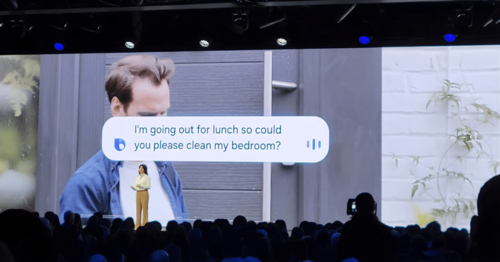

El nuevo robot aspirador de Samsung promete fregar tu suelo con vapor. Spoiler: el vapor no toca tu suelo.
"Friega tu suelo con vapor a 100 °C". Eso promete Samsung con el nuevo Jet Bot Steam Ultra. Pero la letra pequeña cuenta otra cosa: el vapor no toca tu suelo.
Samsung presentó el Bespoke AI Jet Bot Steam Ultra en el CES 2026. Es el primer aspirador de la marca con sufijo Ultra — el mismo que Samsung reserva para sus móviles tope de gama. Promesa grande, precio grande, claim de vapor a 100 °C. Aquí desmontamos qué significa eso de verdad, qué aporta respecto al modelo anterior (que ya se vende en España) y a quién le merece la pena.
El sufijo Ultra en Samsung no es casual. Es la marca visible de "lo más premium que tenemos en la gama". Primero los Galaxy S Ultra, luego las lavadoras Bespoke AI Laundry Combo Ultra, ahora los robots aspiradores. Samsung está diciendo: este es nuestro tope de gama en limpieza doméstica.

Imagen: El Steam Ultra junto a su estación Clean Station con Auto Steam. Fuente: Vacuum Wars / CES 2026.
Las mejoras reales respecto al modelo anterior (Bespoke Jet Bot Combo Steam+, ya disponible en España) son tres:
Bixby también se actualiza: ahora entiende lenguaje natural en vez de comandos rígidos. Le puedes decir "hoy no limpies la cocina que estoy cocinando" y teóricamente lo entiende. Teóricamente, porque Bixby en español sigue sin ser el mejor asistente del mercado.
Precio Corea: 1.860.000 won la versión tope (con llenado/vaciado automático de agua, 2.040.000 won). En euros: ~1.300-1.450 €. Precio Europa y España: aún sin confirmar. Samsung solo ha dicho "lanzamiento global 2026".
Aquí es donde hay que leer con cuidado. El marketing de Samsung repite "fregado con vapor a 100 °C" en casi todas las notas de prensa. El titular que encuentras en blogs hispanos es prácticamente el mismo. Pero si vas a la ficha oficial, descubres algo que cambia todo.
Xataka Home — la principal fuente en español sobre domótica — lo explica sin rodeos en su cobertura del Steam Ultra: el vapor "rocía sobre ellos [las mopas] para evitar olores". Es decir, el vapor se aplica en la estación de limpieza sobre las mopas, no directamente al suelo.
Traducido: cuando el robot vuelve a la base tras fregar, la estación Clean Station rocía vapor a 100 °C sobre las mopas giratorias. Eso mata el 99,99 % de bacterias (E. coli, Salmonella, Staphylococcus aureus según los tests internos de Samsung), elimina olores y deja las mopas limpias para el siguiente uso. El suelo sigue fregándose con agua templada, como siempre.
¿Es útil? Sí. Que las mopas no huelan a "trapo húmedo" al segundo día es un problema real de los combos aspirado-fregado, y esta solución funciona. ¿Es "fregado con vapor"? No, no lo es. Es una feature útil vendida con un claim engañoso.
Porque "aspirador con vapor" se vende mejor que "aspirador con estación autolimpiable termal". Y porque en el segmento premium (Roborock Saros Z70, Dreame X50 Ultra, Ecovacs Deebot X8 Pro Omni) todos están agregando features con nombres grandilocuentes. Samsung no es la primera marca en usar el truco — Dreame también vende "fregado a 75 °C" refiriéndose al agua caliente que se aplica al suelo, pero durante unos segundos por pasada. El gap entre claim y realidad existe en toda la categoría.
Nuestra regla: si ves "vapor", "steam" o "100 °C" en un robot aspirador, busca literalmente dónde se aplica en la ficha oficial. Ahí se ve la verdad.
Mientras Samsung nos cuenta la historia del Steam Ultra, el modelo anterior — el Bespoke Jet Bot Combo AI Steam (referencia VR7MD97714G) — lleva meses en tiendas españolas. Hace el 90 % de lo que hace el Ultra, cuesta la mitad, y el claim del vapor funciona exactamente igual (sobre las mopas, no sobre el suelo).
Precios actuales verificados en abril 2026:
Specs clave del modelo actual: 6.000 Pa de succión, mopas giratorias a 170 rpm, Clean Station con autolavado + vapor 100 °C (a las mopas) + secado con aire caliente, reconocimiento de objetos por IA. Es lo que se llama un "buen robot completo" sin asteriscos.
Si tu casa es mayoritariamente Samsung (SmartThings, TV Frame, lavadora Bespoke), este modelo encaja bien en el ecosistema. Si no, hay alternativas con mejor relación calidad-precio en el mismo rango (Dreame X40 Ultra, Roborock S8 MaxV).
La tabla que no suele aparecer en las notas de prensa — lo importante en una fila:
| Modelo | Vapor real | Precio ES | Estado |
|---|---|---|---|
| Samsung Steam Ultra (2026) |
Mopas, 100°C | ~1.500-1.700 € | Pre-anuncio ↗ |
| Samsung Combo Steam+ (2024-25) |
Mopas, 100°C | 711-1.074 € | A la venta ↗ |
| Roborock Saros Z70 | No | 1.799 € | Review ROBOHOGAR |
| Dreame X50 Ultra | Mopas, 75°C | 1.399 € | A la venta |
| Ecovacs X8 Pro Omni | Mopas, 75°C | 1.299 € | A la venta |
Fila resaltada: mejor relación calidad-precio hoy (abril 2026) entre los modelos con vapor 100 °C para mopas. Precios verificados en idealo.es y Samsung.es. Specs complementarios (potencia, trepa-umbrales, detección de líquidos) se detallan en los apartados de cada modelo.
Este checklist sirve para el Samsung Steam Ultra, el Combo Steam+, cualquier Dreame, Ecovacs o Roborock que venda "vapor" en el titular. Cinco preguntas, cinco respuestas claras.
La pregunta que de verdad importa. Tres escenarios:
Esperar al Ultra tiene sentido. La detección de líquidos es genuinamente útil si tienes perro o niños pequeños (evita arrastrar un accidente por toda la casa), el EasyPass Wheel soluciona el problema clásico de los umbrales, y el chipset Qualcomm Dragonwing debería traducirse en menor latencia en decisiones (queda por ver en reviews reales). Precio probable España: 1.500-1.700 €.
El Combo AI Steam (modelo actual) en refurbed.es a 711 € es la mejor compra de la categoría en abril 2026. Hace lo mismo que el Ultra salvo las tres mejoras concretas del punto anterior. Si tu casa no tiene muchos umbrales ni mascotas que derramen cosas, la diferencia no justifica 700-900 € más.
Hay competencia mejor en el mismo rango. Dreame X50 Ultra (1.399 €) trepa 6 cm y aplica agua caliente al suelo de verdad. Roborock S8 MaxV (~1.100 €) tiene mejor navegación por LiDAR. Ecovacs Deebot X8 Pro Omni (1.299 €) iguala en vapor-base y tiene mejor app.
El mejor consejo que podemos darte hoy: no compres el Steam Ultra. El Combo Steam+ (modelo actual) está a 711 € en refurbed.es y hace lo mismo: vapor a las mopas, 6.000 Pa, autolavado. Lo nuevo del Ultra son detalles, no un salto. Y cuando el Ultra llegue a España, el Combo Steam+ bajará aún más de precio. Paciencia.
Una última cosa: si vienes de un robot aspirador sin fregado (un Roomba básico, un Conga antiguo), cualquiera de estos modelos te cambiará la vida. La diferencia entre el Ultra y el Combo Steam+ es pequeña comparándolos entre ellos. Frente a no tener fregado, es noche y día.
Samsung lleva vendiendo robots aspirador desde 2003, con el primer NaviBot. 23 años después, el Jet Bot Steam Ultra es el primer robot de la marca en llevar el sufijo Ultra — el mismo que Samsung reserva para sus Galaxy S tope de gama. Señal de que Samsung ve el segmento de robótica doméstica como estratégico, no como línea secundaria. Es también un reconocimiento implícito de que las marcas chinas han marcado el paso en este mercado durante la última década.
Publicamos un artículo como este cada semana. Reviews honestas de robots domésticos. Gratis, en español, sin hype.
Suscríbete gratis →Más en ROBOHOGAR:
Disclaimer afiliados: este artículo puede contener enlaces de afiliado (Amazon Afiliados España, pendiente de alta). Si compras algo a través de esos enlaces, ROBOHOGAR recibe una pequeña comisión sin coste extra para ti. Nuestra opinión es independiente y no está patrocinada por Samsung. Todas las marcas citadas pertenecen a sus respectivos propietarios. Datos y precios verificados en abril 2026 — pueden cambiar.